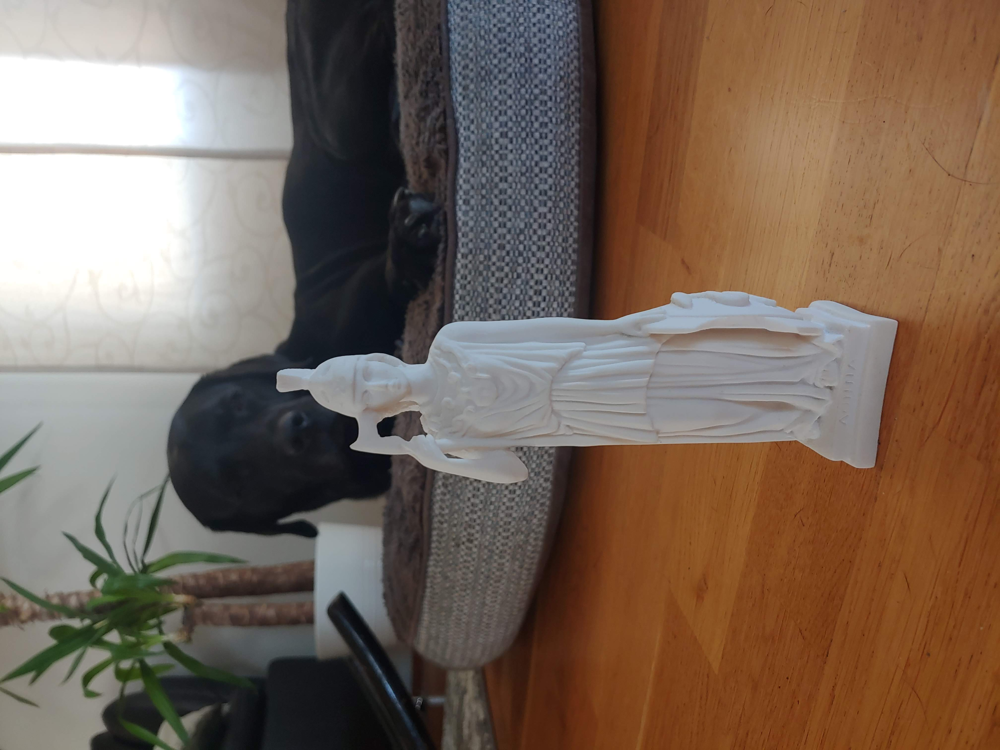

Milling
This assignment can be divided into two parts
This project will be of use to me as I am currently fermenting a lot of fluids that have a tendency to carbonate. Using a 3D printer I could manufacture an airlock using plastic and water. The concept is based on this simple airlock.
AirlockHowever, this design isn't practical for my application. The vessel, in which I am fermenting, doesn't have a convenient lid to fasten this airlock. My vessel is a simple large glass bottle and it would be more convenient to have a airlock which an simply be plugged into the bottle. The basic concepts of this airlocked inspired a new design.
fundamentally, the airlock needed to let gas out without letting any air in. Using this concept I drew up a new design using Solidworks.
New airlock(iso) New airlock(section view)Here, the airlock is designed to slide into the bottle with a tight fit. On the outside of the airlock are two lines that are meant to hold in place silicone or rubber bands that ensure that the airlock is airtight. Inside the airlock, the gas can travel up and will need to fill the chamber in the middle before it can leak under the water line through the gaps and out.
This was printed using a Original Prusa i3 MK3S+ 3D printer. As the airlock needed to be food safe, I used transparent PETG-plastic, the transparancy also allows me to watch the water level inside the airlock. For the print to be as airtight as possible the infill was desired to be as much as possible to avoid gaps but as the wall thickness of the airlock is so small almost no infill was used. The 3D printer was tested and a report can be found on my team member's website. First two attempts at this print were unsuccessful as the base of the airlock became unstable as it grew taller and interefered with the nozzle, causing the plastic to burn.
Burnt AirlockThis was fixed by adding a brim on the bottom of the print, making it more stable. The brim was simply cut off afterwards and then we had the finished product.
Printed AirlockAfter printing the airlock was filled with water to make sure it could hold it. The airlock seemed watertight.
 Water tight Airlock
Water tight Airlock
Inspite of not having the rubber rings, the airlock works as designed. As seen on the animated GIF below the water in the airlock bubbles which means that the air is escaping through the airlock instead of going past it.
Functioning airlockAn improvement which could be made is to minimize the area of the water that is exposed to the outside air in order to reduce the water's evaporation rate.
I wanted to make a 3D model of a small statue of Athena that i got in Crete
Statue of AthenaI started by downloading the app SCANN3D and put the statue in my shower as it had a mostly white background which turned out to blend in with the statue making a poor model. The shower is also narrow and not easy to move in which made it difficult to take the photos. The app provides instructions on the best way to take the photos. I moved the statue over to my pingpong table, which is green and provided more contrast between the statue and the background. The added contrast and space made the model statue easier to capture. The model came out pretty low polygonal but that was expected as the program used required a premium subscription to get a higher resolution. The model of the statue can be downloaded below as an .stl file.

Milling